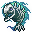

マロウクーダ Marrowcuda
英語版 CrawlWiki の記事「Marrowcuda」(0.32 向け、2024-08-31 版)の翻訳です。原文の著者は編集履歴をご覧ください。
この記事は 0.32 の時点の内容で、最新の 0.34 とは違うところがあるかもしれません。
| マロウクーダ F  | |
|---|---|
| HP | 15-32 |
| HD | 4 |
| XP | 73 |
| 速度 | 13 |
| AC | 4 |
| EV | 11 |
| 意志力 | 10 |
| 攻撃1 | 8 (噛みつき: 群れ)
|
| 耐性 | rC+ rPois+++ rDrown rMiasma rN+++ rTorm |
| 弱点 | 神聖 |
| 生息地 | 陸上 |
| 知能 | 動物並み |
| 使用 | 何も使わない |
| 分類 | アンデッド |
| 体格 | 小さい |
| 種類 | マロウクーダ、マロウクーダ |
| フラグ | 飛行 邪悪 呼吸しない |

| 炎に包まれた肉食魚の骸骨で、かつて水をかき分けていたのと同じくらいたやすく空中を泳ぎ回る。生前には満たされなかった飢えに燃えており、死してなおその飢えだけに突き動かされている。
一匹だけならただの厄介者にすぎないかもしれないが、群れは決して遠くにはおらず、噛みつきが当たるたびにさらに多くの仲間が呼び寄せられ、ついには獲物の肉が一片残らず食い尽くされる。 |
基本情報
マロウクーダは宙を飛ぶアンデッドの魚で、敵に噛みつくと自分の複製を呼び出す。複製は 1 匹につき 8 匹まで。元のマロウクーダが倒されると、その複製はすべてすぐに消える。迷宮の序盤と納骨堂に出る。
小技
- マロウクーダの攻撃が複製を生むのは、ダメージが通ったときだけだ。だから重装のキャラクターほど複製に群がられにくい。
- できれば元のマロウクーダを狙うこと。貫通する攻撃や範囲攻撃が活躍する。
変更履歴
- マロウクーダは 0.32 で、新しい攻撃の追加効果 AF_SWARM とともに追加された。